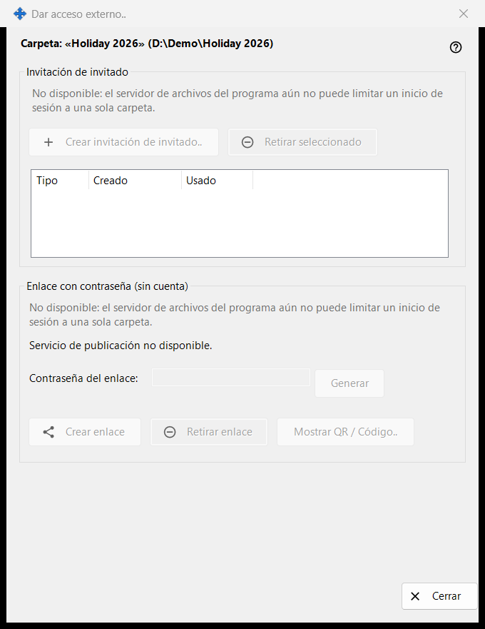
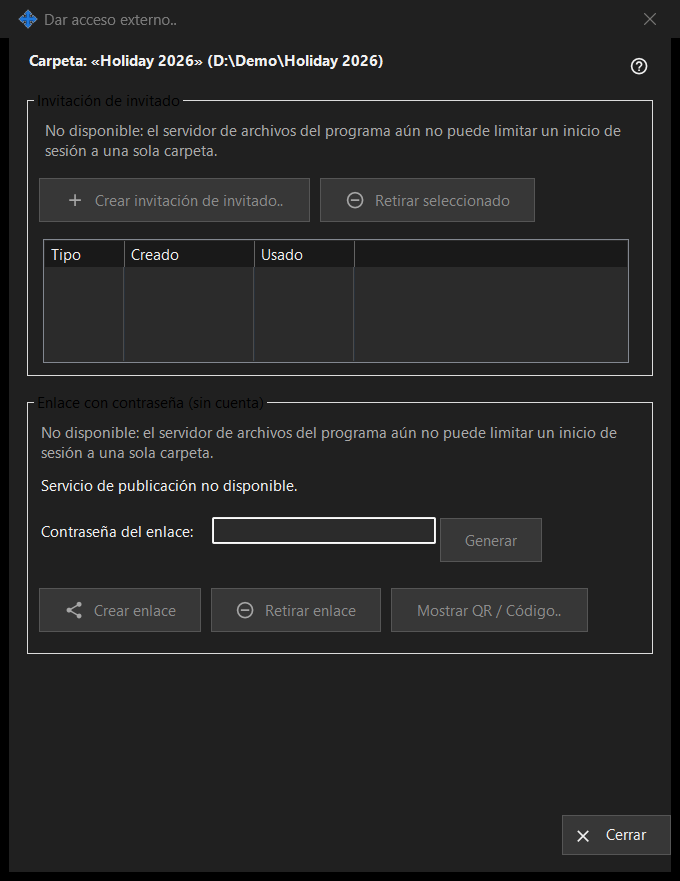

Dar acceso externo
Para qué sirve
Controla el acceso a una carpeta compartida para personas ajenas a tus dispositivos: una invitación de invitado o un enlace con contraseña que no necesita cuenta. Se abre desde el botón «Dar acceso externo..» de la ventana principal de Share Manager para la carpeta seleccionada. En esta versión los controles que crean nuevos accesos están desactivados y la ventana muestra el motivo, mientras que el acceso ya existente todavía se puede retirar.


En este orden
- Lee la línea de encabezado con el nombre y la ruta de la carpeta.
- En cada grupo, lee la línea del motivo; mientras se muestra, no se puede crear nada nuevo.
- Para quitar un acceso, selecciona una invitación y pulsa «Retirar seleccionado», o pulsa «Retirar enlace».
- Pulsa «Cerrar» (Esc) para salir.
Los elementos
Carpeta y estado
La línea en negrita indica la carpeta y su ruta. La línea de estado de abajo informa del último resultado. Cuando el servicio de publicación no está en ejecución, la ventana dice «Servicio de publicación no disponible.» y sus botones están desactivados.
Invitación de invitado
El grupo tiene «Crear invitación de invitado..», «Retirar seleccionado» y una lista con Tipo, Creado y Usado para las invitaciones de invitado de esta carpeta. Retirar quita la invitación; no elimina la carpeta ni sus archivos.
Enlace con contraseña (sin cuenta)
El estado dice «Enlace no creado.» o «El enlace está activo.» El cuadro «Contraseña del enlace:» está enmascarado y «Generar» lo rellena. «Crear enlace» pasa a ser «Actualizar enlace» mientras hay un enlace activo. «Retirar enlace» pregunta antes, porque todas las sesiones activas del enlace terminan. «Mostrar QR / Código..» muestra el enlace como un código.
Por qué la creación está desactivada
Cada grupo muestra una línea con el motivo: el servidor de archivos del programa no puede limitar un inicio de sesión a una sola carpeta. Mientras se muestra, todos los controles que crean invitaciones o enlaces están desactivados. Retirar los accesos existentes depende solo de lo que exista.
Ajustes del gestor · Ajustes de uso compartido SFTP · Ajustes del servidor de intercambio